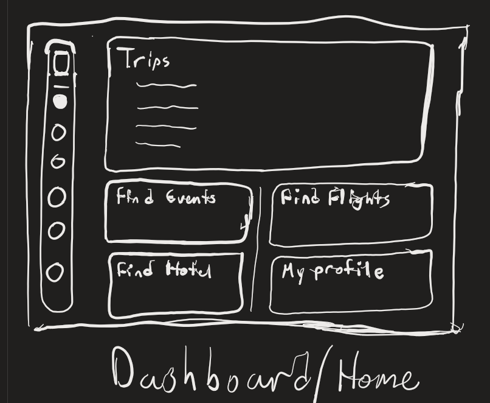
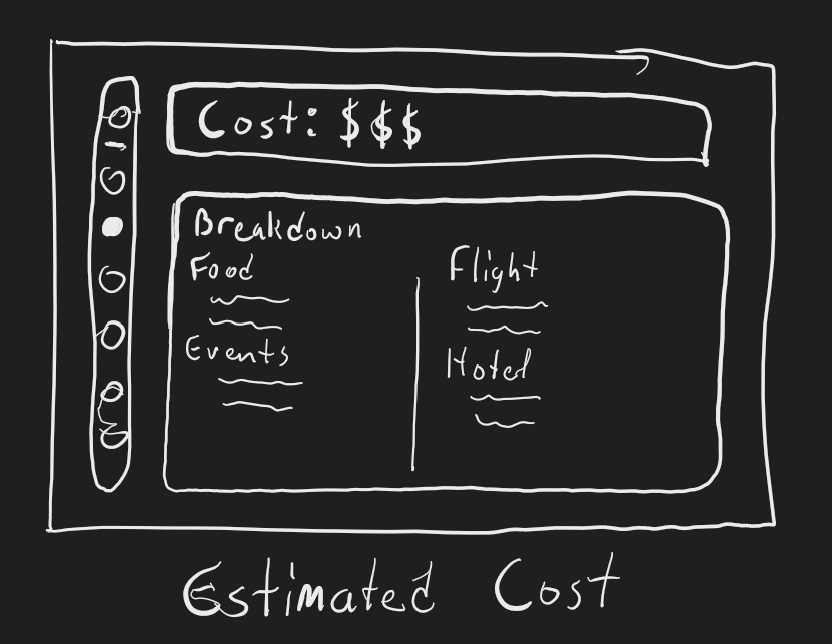
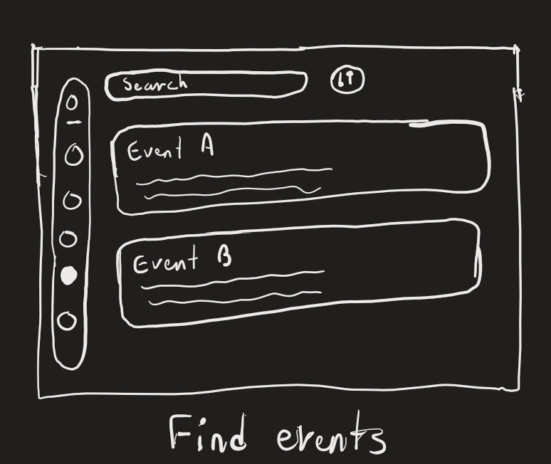
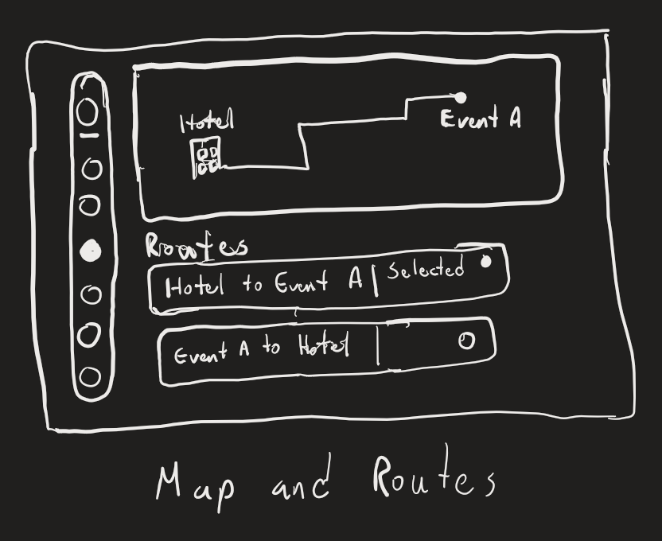

Sprint 4 — Team 11
Mockups
Four screens for Paradise Planner.




Select a screen to open it full size. Every screen shares the same side menu.
Sprint 4 — Team 11
Four screens for Paradise Planner.




Select a screen to open it full size. Every screen shares the same side menu.